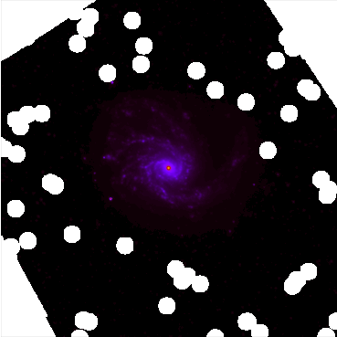
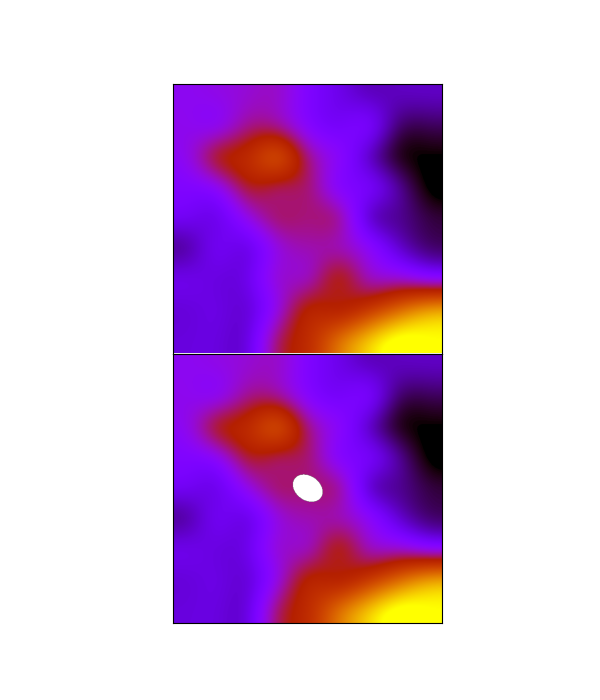
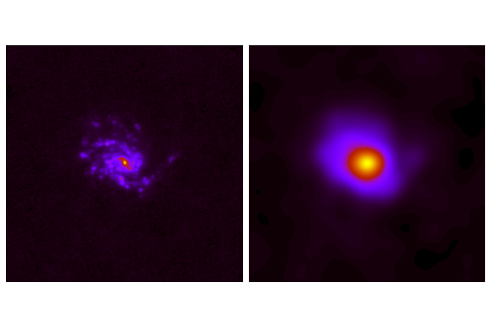
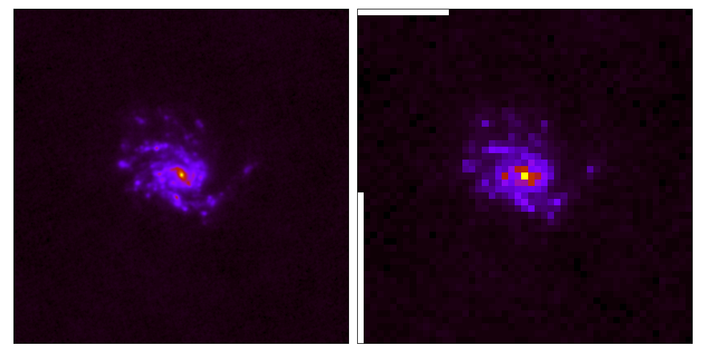

Homogenization example with HIP |
HIP pipelines and data sources are defined in a configuration file using YAML, a human-readable data serialization language. HIP configuration files consist of the following main sections: meta, config, data, and pipeline.
Meta
The meta section is used to define meta-data. Fields in meta are not mandatory. Elements not defined by the user will default to "Default". Elements of this section will be used for logging purposes. The meta section is defined by two elements: name, and description.
name: (Defaults to "Default")
* Type: string
* Description: Name of pipeline
description: (Defaults to "Default")
* Type: string
* Description: Description of pipeline
|
meta: name: HIP description: IRAC1 to SPIRE3 for M99 |
Config
The config section is used to define the run mode. Modes define whether or not to propagate uncertainties, and if yes, how to do so. The config section is defined with two elements: mode, and niter.
mode:
* Type: Literal string ("Single Pass", "Monte-Carlo", "Analytic").
* Description: "Single Pass" mode does not propagate uncertainties, "Monte-Carlo" mode propagates uncertainties using a Monte-Carlo loop, "Analytic" mode propagates uncertainties analytically.
niter:
* Type: Positive integer.
* Description: Number of iterations for "Monte-Carlo" mode.
|
config: mode: Monte-Carlo niter: 1000 |
Data
The data section is used to define the astronomical body and the bands used for the pipeline. The data section is defined with three elements: body, geometry, and bands.
body:
* Type: String
* Description: Name of astronomical source.
The geometry and bands elements are by themselves other sections within the data section.
ra: (Defaults to value from Dustpedia)
* Type: Float
* Description: Right ascension in degrees.
dec: (Defaults to value from Dustpedia)
* Type: Float
* Description: Declination in degrees.
positionAngle: (Defaults to value from Dustpedia)
* Type: Float
* Description: Position angle in degrees.
axialRatio: (Defaults to value from Dustpedia)
* Type: Float
* Description: Axial ratio.
semiMajorAxis: (Defaults to value from Dustpedia)
* Type: Float
* Description: Semi-major axis in arcseconds.
inclination: (Defaults to value from Dustpedia)
* Type: Float
* Description: Inclination in degrees.
radius: (Defaults to value from Dustpedia)
* Type: Float
* Description: Major axis isophote at which optical surface brightness falls beneath 25 mag arcsec−2, in arcseconds.
distance: (Defaults to value from Dustpedia)
* Type: Float
* Description: Distance in Mega parsecs.
input:
* Type: String
* Description: Absolute path towards input data fits file.
output:
* Type: String
* Description: Absolute path towards output directory.
error:
* Type: String
* Description: Absolute path towards input error fits file.
name:
* Type: Literal string
* Description: Name of band following HerBIE nomenclature.
calError: (Defaults to value from Dustpedia)
* Type: Float
* Description: Photometric calibration error in percentage.
|
data: body: NGC4254 bands: - input: data/inputs/NGC4254/NGC4254_PACS1.fits error: data/inputs/NGC4254/NGC4254_PACS1_Error.fits output: data/outputs/NGC4254/ name: PACS1 - input: data/inputs/NGC4254/NGC4254_SPIRE2.fits output: data/outputs/NGC4254/ name: SPIRE2 |
Pipeline
The pipeline section is used to define the homogenization pipeline. The pipeline section is defined with three elements: step, diagnosis, and parameters.
step:
* Type: Literal string (hip.cutout, hip.foregroundMask, hip.skySubtract, hip.degrade, hip.regrid, hip.integrate)
* Description: Name of step.
diagnosis:
* Type: Boolean
* Description: Enable/Disbale debug messages and diagnosis plots.
The parameters section is by itself another section within the pipeline section. The parameters section is defined with different elements for each choice of step. The following are the possible elements of parameters for each step:
This step allows to perform a cutout the data centered at ra, dec as defined in geometry. This step is defined with three elements: band, raTrim, and decTrim.
band:
* Type: Literal string
* Description: Name(s) of input band.
raTrim:
* Type: Float
* Description: Size of the cutout along the x axis in arcminutes.
decTrim:
* Type: Float
* Description: Size of the cutout along the y axis in arcminutes.
|
pipeline: - step: hip.cutout diagnosis: True parameters: - band: PACS1, SPIRE2 raTrim: 10 decTrim: 10 |

Cutout example for PACS1 image of NGC4254. The cutout region was defined to be 10x10 arcmins as shown in the example above. |
This step allows to mask foreground objects within a specific area centered at ra, dec as defined in geometry. This step is defined with four elements: band, raTrim, decTrim, and factor.
band:
* Type: Literal string
* Description: Name(s) of input band.
raTrim:
* Type: Float
* Description: Size of the area along the x axis in arcminutes.
decTrim:
* Type: Float
* Description: Size of the are along the y axis in arcminutes.
factor:
* Type: Float
* Description:
|
pipeline: - step: hip.foregroundMask diagnosis: True parameters: - band: MIPS1 raTrim: 10 decTrim: 10 factor: 2 |
|

Foreground masking for MIPS1 image of NGC4254. The foreground masking was defined to be 10x10 arcmins with a factor of 2 as seen in the example above. |
This step allows to estimate and subtract the background from the data. The background is estimated using 3 sigma-clipped statistics in each box of a grid that covers the data. The high-resolution background map is then calculated by cubic interpolation of the low-resolution background map. This step is defined with two elements: band, and cellFactor.
band:
* Type: Literal string
* Description: Name(s) of input band.
cellFactor:
* Type: Positive integer
* Description: Number of resolution elements per box.
|
pipeline: - step: hip.skySubtract diagnosis: True parameters: - band: SPIRE1 cellfactor: 3 |
|

Sky subtract example for SPIRE1 image of NGC4254. |
This step allows to degrade an image to a target lower resolution. The step can be done either by providing a kernel to be applied, or by specifying the target resolution. The first method allows the user to use a specific kernel for the degradation, whereas the second method constructs a Gaussian kernel with the correct full-width-half-maximum to degrade the image to the target resolution. This step can be defined with three elements: band, target, and/or kernel.
band:
* Type: Literal string
* Description: Name(s) of input band.
kernel:
* Type: String
* Description: Absolute path towards kernel FITS file.
target:
* Type: Positive integer
* Description: Target resolution in arcseconds.
|
pipeline: - step: hip.degrade diagnosis: True parameters: - band: PACS1 kernel: kernels/Kernel_LowRes_PACS_70_to_SPIRE_500.fits - band: PACS1 target: 36 |
|

Degradation from PACS1 with a resolution of 9 arcseconds to SPIRE3 with resolution of 36 arcseconds for NGC4254. |
This step allows to reproject an image to a target WCS projection. This step can be defined with two elements: band, and target.
band:
* Type: Literal string
* Description: Name(s) of input band.
target:
* Type: String
* Description: Absolute path towards a target FITS file.
|

Regridding PACS1 image with pixel size 3 arcseconds to SPIRE3 with pixel size 12 arcseconds for NGC4254. |